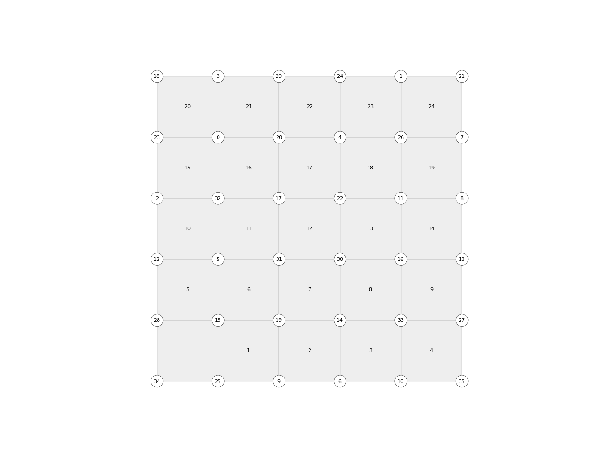

Mesh.collapse_edge_tri
-
Mesh.collapse_edge_tri(u, v, t=0.5, allow_boundary=False, fixed=None) Collapse an edge to its first or second vertex, or to an intermediate point.
Notes
An edge can only be collapsed if the collapse is legal. A collapse is legal if it meets the following requirements:
any vertex w that is a neighbour of both u and v is a face of the mesh
u and v are not on the boundary
…
See [] for a detailed explanation of these requirements.
- Parameters
u (str) – The first vertex of the (half-) edge.
v (str) – The second vertex of the (half-) edge.
t (float) – Determines where to collapse to. If t == 0.0 collapse to u. If t == 1.0 collapse to v. If 0.0 < t < 1.0, collapse to a point between u and v.
- Returns
None
- Raises
ValueError– If u and v are not neighbours.
Examples
import compas from compas.datastructures import Mesh from compas.plotters import MeshPlotter mesh = Mesh.from_obj(compas.get('faces.obj')) plotter = MeshPlotter(mesh) plotter.draw_vertices(text={key: key for key in mesh.vertices()}, radius=0.2) plotter.draw_faces(text={fkey: fkey for fkey in mesh.faces()}) plotter.show()
import compas from compas.datastructures import Mesh from compas.plotters import MeshPlotter from compas.geometry import centroid_points mesh = Mesh.from_obj(compas.get('faces.obj')) for fkey in list(mesh.faces()): vertices = mesh.face_vertices(fkey) mesh.split_face(fkey, vertices[0], vertices[2]) mesh.swap_edge_tri(14, 16) mesh.swap_edge_tri(31, 22) mesh.collapse_edge_tri(30, 17) mesh.collapse_edge_tri(30, 31) mesh.collapse_edge_tri(30, 22) points = mesh.get_vertices_attributes('xyz', keys=mesh.vertex_neighbours(30)) x, y, z = centroid_points(points) attr = {'x': x, 'y': y, 'z': z} mesh.set_vertex_attributes(30, attr) plotter = MeshPlotter(mesh) plotter.draw_vertices(text={key: key for key in mesh.vertices()}, radius=0.2) plotter.draw_faces(text={fkey: fkey for fkey in mesh.faces()}) plotter.show()